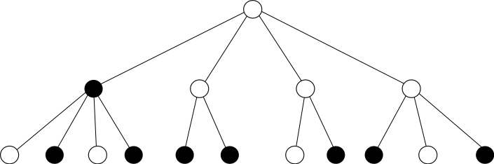
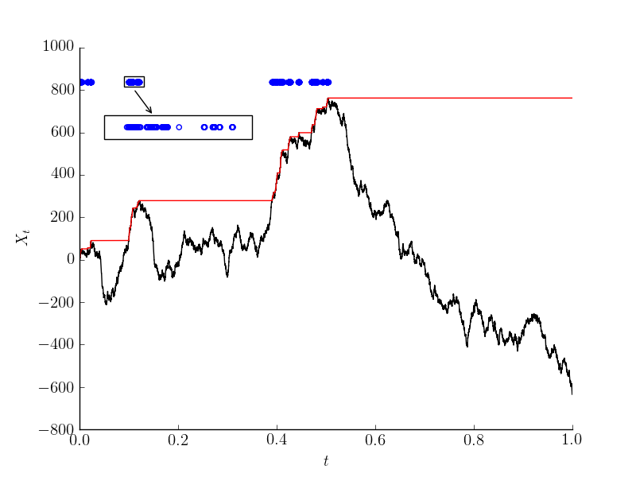

I'm a postdoc at Roma Tre university, interested mostly in mathemitical statistical physics.
I did my PhD at the LPSM with Cristina Toninelli on interacting particle systems, and specifically on kinetically constrained models. This is a family of models studied in physics in order to better understand jamming of glassy and granular materials. You can see my thesis here.
I studied for a B.Sc. in mathematics and physics at the Technion in Haifa (which is also my home town). Other than classes, I also got to work on two research projects, one in probability with Itai Benjamini at the Weizmnn Institute, and the other in experimental physics at Bielefeld university with Armin Gölzhäuser.
After by bachelor's, I moved to Paris and studied for a master's degree in theoretical physics at the ENS. This was a two year program, with two research internships, one for each year. The first year I worked at the LPMA (which has turned into LPSM this year), with Giambattista Giacomin and Cristina Toninelli. Both projects were in mathematical statistical physics, from the mathematical side of it. For my second year's internship I worked with Kay Wiese at the LPTENS, still on statistical physics but from its physics side.
You can see my CV here.
With Erik Slivken. arXiv preprint arXiv:1906.09949 (2019).
In this work we studied the Fredrickson-Andersen model on the polluted lattice (i.e. when removing some of the vertices at random). This model is a part of a large family of models called kinetically constrained models, that try to explain certain aspects of glasses and granular materials. We wanted to understand how typical time scales diverge when the density is very high. It's a question that has been studied before for many kinetically constrained models in homogeneous systems, and different models show some behavior that could also be seen experimentally.
But physical systems are not always homogeneous (e.g. a granular material with two grain types). In these cases, it could be more appropriate to take a dynamics in random environment. The random environment that we've taken is the polluted lattice, that's already been analyzed in a closely related model called the bootstrap percolation.
Many of the tools used in order to understand kinetically constrained models in homogeneous environments stop working when the system is not homogeneous (e.g. the spectral gap). The reason is that in random systems remote regions that are not really typical influence the quantities that we study, even though they shouldn't effect the actual dynamics. We needed to find a way to analyze time scales of the model in a way which ignores these untypical regions. We managed to do that by looking at hitting time of events that depend only on the state near the origin (or any arbitrary vertex).
With Fabio Martinelli and Cristina Toninelli. arXiv preprint arXiv:1904.11078 (2019).
The Kob-Andersen model is an interacting particle system evolving according to the Kawasaki dynamics, i.e., particles live on the vertices of $\mathbb{Z}^d$, and could jump to a neighboring site. In this particular model the particle could jump only to an empty site, and only if the number of empty neighbors it has passes some fixed threshold both before and after the jump.
We found that the relaxation time of this model has a diffusive scaling, that is, it grows as the square of the length.
arXiv preprint arXiv:1812.00774 (2018).
Kinetically constrained models (KCMs) are interacting particle systems whose dynamics is being slowed down by a kinetic constraint. They live on a graph, where each vertex (site) could be either empty or occupied. The state of a site could only be changed when the constraint is satisfied. When this is the case, sites update with rate $1$ - independently of everything, the site forget its state, and gets a new random state which is empty with probability $q$ and occupied with probability $1-q$.
One example is the Fredrickson-Andersen $j$-spin facilitated model (FAjf) on the the two dimensional lattice, where a site could only be updated if it has at least $j$ empty neighbors. Another example is the North-East model. Here we require both the site above and to the right to be empty for the constraint to be satisfied. In general, the constraints that we choose are easier to satisfy when there are more empty sites.
In this paper I studied KCMs in random environment, obtained by mixing constraints. The first mixture is of FA1f together with FA2f, and the second is a mixture of FA1f with North-East. In both cases we choose the constraint randomly for each vertex in the beginning, and then run the process.
The main difficulty compared to the more classical KCMs, is that this model is not homogeneous - once fixing the constraints, different points on the lattice have different behavior. In particular, if we look far enough we will come across some “untypical” regions that are difficult to control. This is the reason that the relaxation time, which usually describes typical time scales of KCMs, is no longer the correct quantity to study. In many models the way to overcome this issue is by coupling methods, but KCMs are not attractive, so this solution doesn't work.
In this paper I show how to use variational principles other than the spectral gap in order to understand how long it takes for some arbitrary site to become empty. This time could be much smaller than the relaxation time. For example, in the FA1f and NE mixture, the relaxation time is infinite but the emptying time of the origin is typically a power of $q$. For the FA1f and FA2f mixture, I show that the emptying time behaves again like a power of $q$ (here the relaxation time is exponential). In this case, I can also prove that this power is random, i.e., it changes from one realization of the noise to the other.
arXiv preprint arXiv:1706.08390 (2017).

In this work, I tried to understand how the bootstrap percolation on Galton-Watson trees behaves near its phase transition. I analyzed the $r$-children bootstrap percolation – each vertex of the tree is either infected or healthy, and at each step healthy vertices become infected if they have at least r infected children. In the animation healthy vertices (white) become infected (black) if they have at least two infected children. This is a deterministic dynamics in discrete time, and the randomness comes from the tree (which is random), and also from the initial configuration. In our case, in the beginning sites are infected with probability $q$ independently.
Depending on the offspring distribution of the Galton-Watson tree and on the threshold $r$, a phase transition could occur – up until a certain value of $q$ some of the sites belong to a block of “immune” sites, that could never be infected. But if enough sites are infected in the beginning, all sites will eventually be infected with probability $1$. It's even possible to tell if this probability is continuous of discontinuous at the critical point, and in fact different offspring distributions give different behavior.
I was interested in the time scaling near the critical point. For the continuous case, the question was how fast the probability to stay healthy forever decays as $q$ approaches its critical value. For the discontinuous case, the picture is different – at the critical value, the limiting probability to stay healthy is nonzero, but once we increase $q$ it becomes $0$. If we look more closely, we see that when $q$ is just above criticality the probability to remain healthy after a certain number of time steps has a long plateau, and after a very long time it decays to $0$. This plateau becomes longer and longer as $q$ approaches its criticality, and at the critical point it reaches infinity. What I was trying to understand is how the length of this plateau changes with $q$ for different offspring distributions.
It turns out that there are many possible exponents for the scaling of the plateau with the distance from criticality, unlike the case of a regular tree, in which this exponent is always $1/2$. Another behavior that doesn't exist in regular trees is the appearance of more plateaus, and not just one at the limiting probability at criticality.
With Lucas Benigni, Clément Cosco and Kay Wiese. Electronic Communications in Probability 23 (2018).
The fractional Brownian motion with Hurst index H is a continuous Gaussian process. It has stationary increments, and it is self-similar with an exponent $H$ – stretching time by some scalar $\alpha$ and space by $\alpha^H$ doesn't change its law. For $H=1/2$ we get the normal Brownian motion, but for other values of $H$ the process is not Markovian.
We were interested in its records, i.e., the times at which the process reaches its previous maximum. For the Brownian motion, the records have the same statistics as the 0s, so they have the same Hausdorff dimension of $1/2$. One way to understand that connection is thinking of the simple random walk (with probability $1/2$ to move up and $1/2$ down), but starting at $-1/2$ rather than $0$. The walk never hits $0$, but we can think of the zero set as the times at which the random walk changes sign. These times form a point process with independent increments. The law of the increments the law of the time it takes for a simple random walk to go from $0$ to $1$ (or $0$ to -$1$, depending if it's an even point or an odd point, but it's the same). This is the exact same process as the records – whenever we break a record, the time for the next record is when we hit the current record $+ 1$.
This reasoning works thanks to the Markov property, and for the fractional Brownian motion it is wrong. We showed in this work that unlike the zero set (that has dimension $1-H$) the record set has dimension H, so they coincide only for the Brownian motion.
With Giambattista Giacomin and Christophe Poquet. Journal of Differential Equations 264 (2018).
In this work we analyzed the phase shift of an oscillator caused by a random noise. Consider a dynamical system with a stable periodic path (limit cycle), and perturb it with white noise that has a small amplitude $\epsilon$;. We then compare the noisy path to the original unperturbed one. In the beginning, since the noise is small, we will not feel it, and both systems move more or less together. As time goes by, the noise starts playing a role. Fluctuations transversal to the cycle will be suppressed very strongly, since the limit cycle is stable. However, in the direction parallel to the limit cycle the system could fluctuate freely. This is the reason we expect to see the perturbed and unperturbed system separate at times of order $\epsilon^{-2}$, which is the timescale of the free diffusion. We showed that they indeed separate in this scale, and found an exact expression describing the (stochastic) dynamics of the difference between both phases.
The picture shows an example of a dynamical system with a stable limit cycle (black) and two realization of a noisy dynamics (blue and red). The simulation is of one period, and we see that some random phase difference is created. The animation shows both the unperturbed dynamics (blue) and the one with noise (red), and we see how the phase difference between the two evolves.
With Amichai Lampert. Electronic Communications in Probability 18 (2013).
Consider a random walk on the discrete segment $[0,N]$ reflected at $0$. The random walk starts at $0$, and ends when it reaches $N$. The points of $[0,N]$ are of two types – the background and the boosts. In the background, the probability to move to the right is $q$ and $1-q$ to the left. At boosts, the probability to move to the right is $p$ and $1-p$ to the left. If we are allowed $k$ boosts, where should we put them in order to minimize the expected hitting time at $N$?
This question was solved here for $\frac{1}{2} = q < p$, and the optimal placing is when the boosts are equally spaced. We extended this result to $\frac{1}{2} < q < p$, showing that the same spacing works.